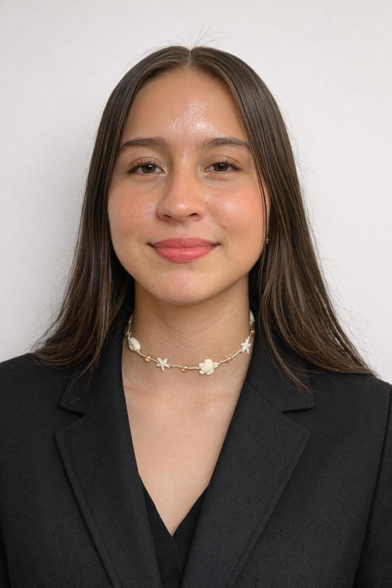
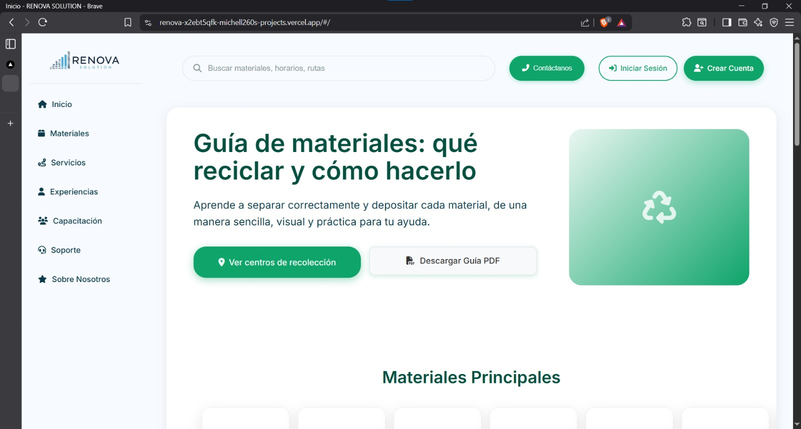
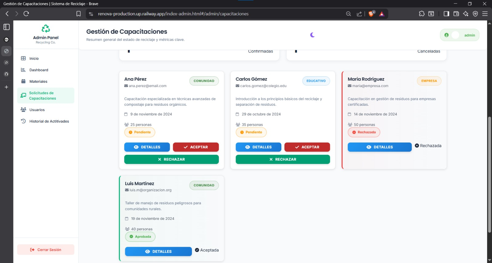
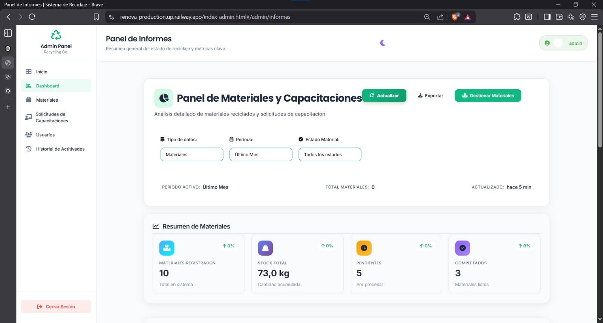
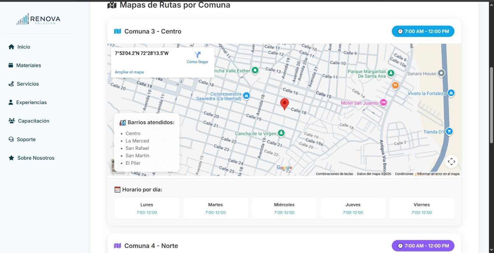
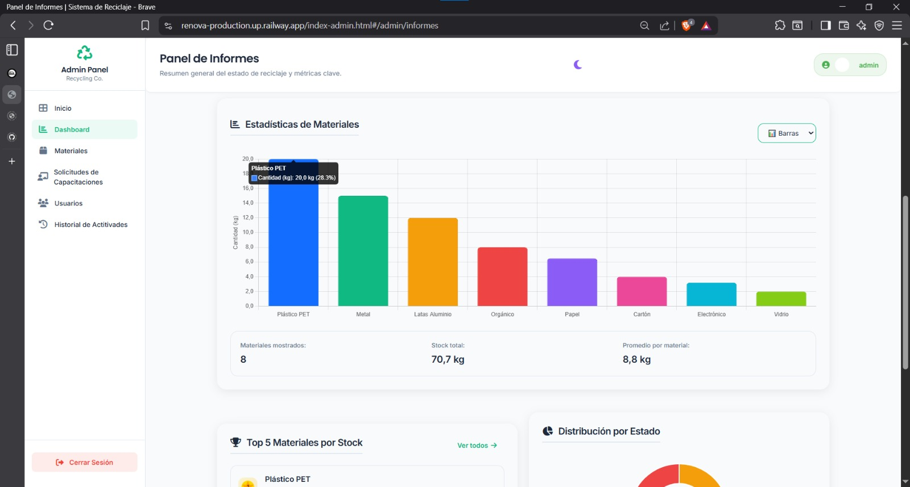
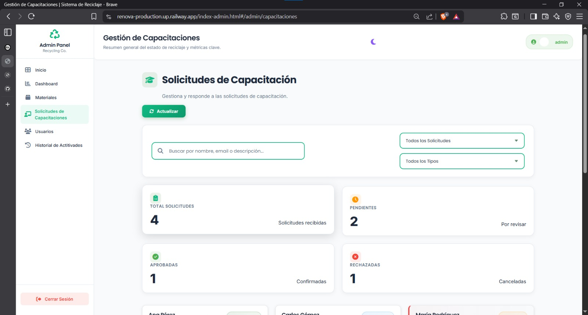

Hola 👋
Soy Dalgy Yesenia
Tecnóloga en Análisis y Desarrollo de Software (ADSO)

Sobre mí
Nombre: Dalgy Yesenia Buitrago Contreras
Edad: 20 años
Programa: Tecnólogo en Análisis y Desarrollo de Software (ADSO)
Institución: SENA
Soy estudiante apasionada por la tecnología y la creación de soluciones digitales. Me considero una persona responsable, colaborativa y con gran capacidad para aprender y adquirir nuevos conocimientos. Me gusta trabajar en equipo, resolver problemas y desarrollar soluciones tecnológicas que ayuden a mejorar procesos y facilitar el uso de aplicaciones digitales.
Servicios que ofrezco
Diseño UI / UX
Diseño de prototipos y mockups de páginas web y aplicaciones, enfocándome en la experiencia de usuario.
Desarrollo Web
Creación y desarrollo de páginas web modernas, responsivas y optimizadas.
Programación
Desarrollo de lógica de negocio y algoritmos con diferentes lenguajes de programación.
Tecnologías y herramientas
Proyecto Destacado
Plataforma RENOVA
Sistema de Gestión de Reciclaje
Plataforma web integral para la gestión de reciclaje que permite a los usuarios consultar materiales reciclables, localizar centros de recolección cercanos y llevar un registro de su impacto ambiental. Desarrollado como proyecto académico en el SENA.






Características principales
- 📍 Geolocalización de centros de reciclaje cercanos
- ♻️ Catálogo completo de materiales reciclables
- 📊 Dashboard con estadísticas de impacto ambiental
- 👤 Sistema de perfiles de usuario
- 📱 Mapa de cobertura zonal
- 🔍 Usuarios activos
Ponte en contacto
¿Listo para trabajar juntos en tu próximo proyecto?
correo:yeseniabuitrago3@gmail.com
Github:yeseniabuitrago3-hash
Telefono:3132696614